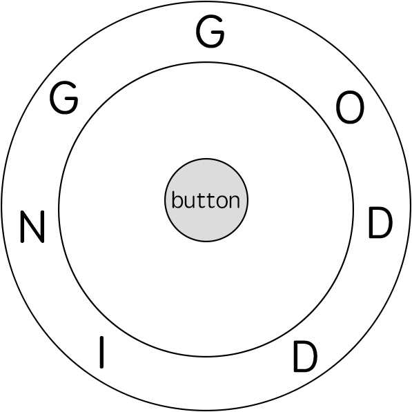

514. 自由之路
环上 DP：dp[j] = 拼完当前字符后指针停在 j 的最少步数；每个目标位从上一轮所有位置取「短弧 + 1 按键」。
思路
where[c]预存字符c在ring里的所有下标；dp用滚动数组，只留当前一轮。- 转移：对目标位
p（ring[p] == key[i]），从上一轮所有可达j松弛：dp[j] + min(|p−j|, n−|p−j|) + 1，+1是按键。 - 环上距离必须双向取短弧，逆时针走可能更近；开局
dp[0] = 0（指针在 12:00）。 - 拼完整个
key后，答案是最后一轮dp里的最小值（指针停哪都行）。
图解
最优解
1import java.util.*;2 3class Solution {4 public int findRotateSteps(String ring, String key) {5 int n = ring.length();6 // where[c]：字符 c 在 ring 里出现的所有下标，升序7 List<Integer>[] where = new List[26];8 Arrays.setAll(where, e -> new ArrayList<>());9 for (int i = 0; i < n; i++) where[ring.charAt(i) - 'a'].add(i);10 // dp[j]：拼完当前字符、指针停在 j 的最少步数；开局指针在 0（12:00）11 int[] dp = new int[n];12 Arrays.fill(dp, Integer.MAX_VALUE);13 dp[0] = 0;14 for (int i = 0; i < key.length(); i++) {15 int[] ndp = new int[n];16 Arrays.fill(ndp, Integer.MAX_VALUE);17 for (int p : where[key.charAt(i) - 'a']) {18 // 从上一轮每个可达位置 j 转到 p：环上顺、逆两条弧取短的，再按 1 次按钮19 int best = Integer.MAX_VALUE;20 for (int j = 0; j < n; j++) {21 if (dp[j] == Integer.MAX_VALUE) continue;22 int d = Math.abs(p - j);23 d = Math.min(d, n - d);24 best = Math.min(best, dp[j] + d);25 }26 ndp[p] = best + 1; // 转到位后还要按 1 次按钮拼写27 }28 dp = ndp;29 }30 int ans = Integer.MAX_VALUE;31 for (int v : dp) ans = Math.min(ans, v);32 return ans;33 }34}题目
电子游戏“辐射4”中，任务 “通向自由” 要求玩家到达名为 “Freedom Trail Ring” 的金属表盘，并使用表盘拼写特定关键词才能开门。
给定一个字符串 ring ，表示刻在外环上的编码；给定另一个字符串 key ，表示需要拼写的关键词。您需要算出能够拼写关键词中所有字符的最少步数。
最初，ring 的第一个字符与 12:00 方向对齐。您需要顺时针或逆时针旋转 ring 以使 key 的一个字符在 12:00 方向对齐，然后按下中心按钮，以此逐个拼写完 key 中的所有字符。
旋转 ring拼出 key 字符 key[i]的阶段中：
- 您可以将 ring 顺时针或逆时针旋转 一个位置 ，计为1步。旋转的最终目的是将字符串
ring的一个字符与12:00方向对齐，并且这个字符必须等于字符key[i]。 - 如果字符
key[i]已经对齐到12:00方向，您需要按下中心按钮进行拼写，这也将算作 1 步。按完之后，您可以开始拼写 key 的下一个字符（下一阶段）, 直至完成所有拼写。
示例 1：

输入: ring = "godding", key = "gd" 输出: 4 解释: 对于 key 的第一个字符 'g'，已经在正确的位置, 我们只需要1步来拼写这个字符。 对于 key 的第二个字符 'd'，我们需要逆时针旋转 ring "godding" 2步使它变成 "ddinggo"。 当然, 我们还需要1步进行拼写。 因此最终的输出是 4。
示例 2:
输入: ring = "godding", key = "godding" 输出: 13
提示：
1 <= ring.length, key.length <= 100ring和key只包含小写英文字母- 保证 字符串
key一定可以由字符串ring旋转拼出
题面取自力扣当前版本。
数据快照 2026-11-04。题面版权归力扣所有，本站点仅供本人学习使用，请勿对外发布。